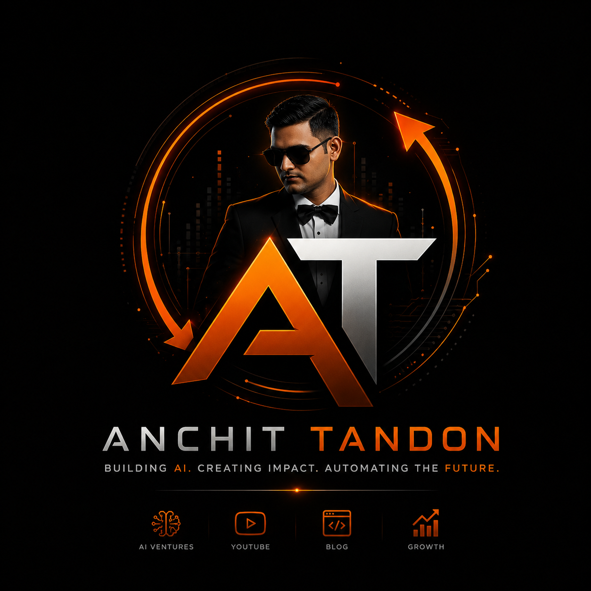

Side hustle · a growth OSLifecycle OS
One operating loop for D2C growth - read the data, plan the calendar, generate the mailers, and let it run. Brand-agnostic and grounded in industry benchmarks; it opens on real D2C brands from ten industries and works for any brand you plug in. No proprietary data required.
This page is the walkthrough and the case study. The product itself is Lifecycle OS — a multi-tenant brand marketing platform you sign in to and onboard your own brand into.
See it working
Three steps of the loop on a sample brand. Every screen below is a module you can open and run right now; the numbers in them are an industry-benchmark sample, not a client’s data.


One result
Segments, cohorts and benchmarks from the subject's industry.
A segment- and cadence-aware send plan.
On-brand mailer variants pre-generated per send.
Human-in-the-loop; every variant quality-scored.
KPIs close the loop and feed the next cycle.
The case study
Enter any brand — get its industry read and a ready-to-ship lifecycle plan in seconds.
What it is
A plug-and-play, brand-agnostic lifecycle engine for any D2C brand. You enter a brand name or URL; it infers the category, benchmarks the competitive set the way a SimilarWeb / SEMrush market profile would — traffic mix, channel split, typical AOV and repeat-rate bands, seasonality — and then designs the whole lifecycle live: audience segments, a 30-day campaign calendar, an on-brand sample mailer, retention automations and target KPIs.
Why I built it
Most D2C teams start every lifecycle plan from a blank page and a gut feel for “what good looks like” in their category. I wanted to compress that: type a brand, and instantly see where it likely sits versus its industry — then get a concrete, ESP-ready plan grounded in those benchmarks rather than guesses. It’s the generalised, any-brand expression of how I think about retention: read the data, benchmark the market, then let the plan write itself.
What’s broken without it
- No baseline. Teams plan lifecycle campaigns without knowing their category’s typical channel split, AOV or repeat-rate. The engine seeds every plan from industry-standard bands for the brand’s peer set.
- Blank-page planning. A 30-day calendar normally starts empty. Here it arrives segment- and cadence-aware, tuned to the inferred industry’s seasonality.
- Mailer cold start. Every send begins from scratch. The demo hands you an on-brand sample mailer inferred from the brand’s positioning.
- Vendor lock to see value. Most tools need account access and real data before they show anything. This returns a usable plan from just a brand name.
How it’s built
- Industry-benchmark layer. The brand is mapped to a category and a competitive set, then profiled against competitive-intelligence-style baselines. Where a live data provider is keyed it uses it; otherwise it derives the bands from an LLM-backed industry model.
- Free multi-provider LLM cascade. The plan generator routes across free LLM providers (Groq → Cerebras → Gemini → OpenRouter), demoting on quota/auth failures so one outage never takes the demo down.
- Deterministic fallback. If every provider is unavailable, a template planner still returns a coherent, ESP-ready plan, so the demo always shows something usable.
One source of truth, four times over
Sixteen modules only feel like one product because four small files refuse to let them disagree.
region-context.js— one active region, shared by every page. Region selection had been built on 17 of 66 pages in six different ways, none of them sharing state.brand-context.js— one active brand, driving tokens, fonts, title and favicon everywhere at once.brand-catalog.js— one catalogue resolver, so no workspace is quietly shown another tenant’s products.analysis-registry.js— one place that says which analysis lives where, so two surfaces cannot each decide for themselves.
The roadmap in my head
Deeper live competitive-intelligence integrations (paid SimilarWeb / SEMrush pulls behind a key), category-specific benchmark libraries, a one-click export of the whole plan to popular ESPs, and a “compare two brands” mode that diffs their likely lifecycle posture side by side.
Questions
What is Lifecycle OS?
Lifecycle OS is a plug-and-play, brand-agnostic AI lifecycle marketing operating system built by Anchit Tandon. You enter a D2C brand and it designs the whole retention funnel — audience segments, a campaign calendar, sample mailers, retention flows and KPIs — all AI-generated.
How do I use Lifecycle OS?
Open the live app at lifecycle-os.anchit-tandon.com — it works signed out — or try the walkthrough modules on this page. The Full lifecycle plan module takes a brand name and optional website and returns the whole plan in one pass. The engine benchmarks the category, builds segments and lifecycle stages, drafts a week-by-week calendar and an on-brand mailer, wires retention automations and sets target KPIs. You can export the full plan as JSON.
Is Lifecycle OS specific to one brand?
No — it is subject-agnostic. It ships loaded with anchit-tandon.com as a demo (marketing a résumé like a D2C product), but you can point it at any consumer brand and the same engine adapts positioning, audiences, calendar and voice.
How does the AI benchmark a brand's industry?
It reads the subject's category and comparable set and starts every plan from real baseline response-rate and retention bands — the way SimilarWeb or SEMrush profile a market — rather than guessing, then generates the segments and flows on top of those benchmarks.
What does the generated lifecycle plan include?
Each plan includes an industry read and benchmarks, a data-analysis view (segmentation model, best send window, cohort retention, cross-sell affinity), audience segments, lifecycle stages, a campaign calendar, a strategy-locked on-brand mailer with scored variants, retention automations, a Smart Brain autopilot loop, guardrails and target KPIs.
Is Lifecycle OS free?
Yes. The walkthrough modules and the Full lifecycle plan are free on Anchit Tandon's portfolio site with no signup, and the live app opens signed out; signing in with Google keeps your brands under your name.